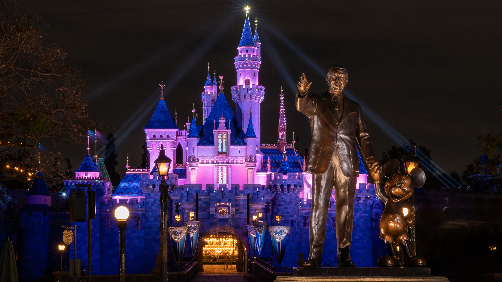

Каліфорнія розташована на узбережжі Тихого океану.
Вона межує зі штатом Орегон на півночі, штатами Невада
та Аризона на сході та мексиканським штатом Баха-Каліфорнія
на півдні. Каліфорнія — третій за площею штат США (410000 км²).
Центральну частину штату займає родюча
Центральна долина, обрамлена з усіх боків горами,
і яка колись була дном океану. На півдні Каліфорнії знаходиться пустеля
Могаве. На північному заході Могаве лежить Долина Смерті — найнижча
і жаркіша точка Північної Америки. На сході
знаходяться гори Сьєрра-Невада.
Їх вінчає гора Вітні — найвища точка континентальної частини
США (4421 м). Тут же знаходиться Національні парки Йосеміті, Секвоя,
Королівський каньйон, та глибоке прісне озеро Тахо. Територією всієї Каліфорнії
проходить розлом Сан-Андреас, через це тут часті землетруси. Також на території
Каліфорнії знаходиться декілька вулканів.
Disneyland Park
Єдиний і неповторний Disneyland Park, побудований самим Уолтом Діснеєм,
розкинувся на каліфорнійських пагорбах на південний схід від Лос-Анжелеса.
Найперший «Діснейленд» у містечку Анахайм був відкритий в 1955 році, а вже в
90-х у парку-піонера з'явився посуд - Disney California Adventure Park, з ще більшим
вибором розваг. Тематично простір поділили на 8 країн, у яких перетинаються сюжетні
маршрути різних мультфільмів Disney та Pixar.

Лос-Анджелес
Лос-Анджелес - найбільше місто штату Каліфорнія і друге за чисельністю населення місто США.
Лос-Анджелес розкинувся в Південній Каліфорнії на узбережжі Тихого океану, довжина міста з півночі на
південь – близько сімдесяти кілометрів, а із заходу на схід – майже п'ятдесят. Велика частина "Міста ангелів"
побудована в низовині, відомій як басейн Лос-Анджелеса, і відокремленою від неї горами Санта-Моніка долині
Сан-Фернандо.